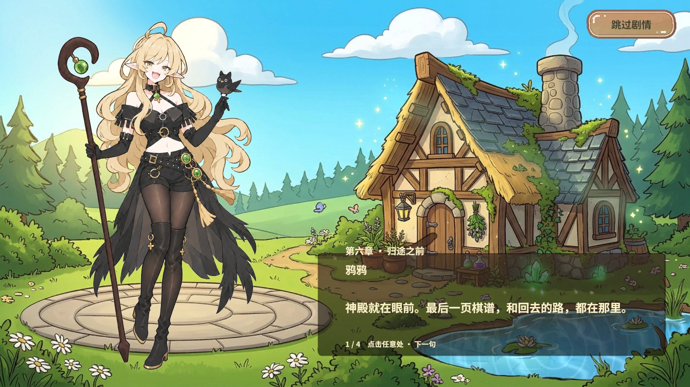
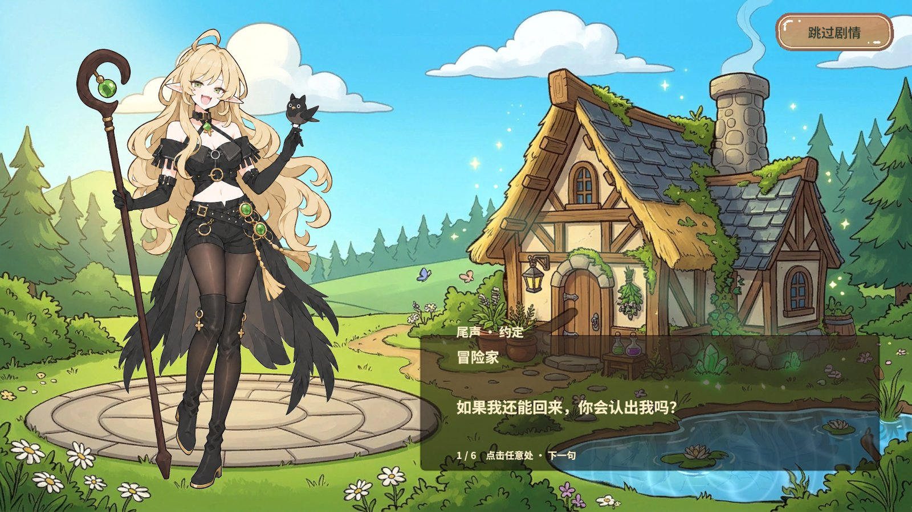
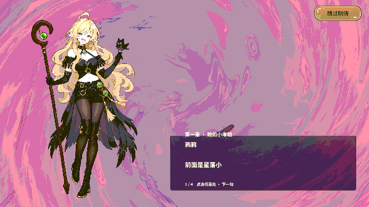

使用方法与结论
在大厅执行 剧情/篇章清单 查看 ID。执行 剧情/播放篇章 chapter6 可直接看第六章，省略 ID 时播放序章。点击画面或执行 剧情/下一句 翻页，末句后自动关闭。也可以用右上角按钮或 剧情/跳过 退出。
预览留在原界面，结束后恢复输入。当前场景已交付同章背景时沿用原画，其它情况下用大厅背景。预览不触发首次剧情、教学、战役或奖励回调。
文案复核发现一处疑似笔误。教学引子
tutorial 第 3 句显示“打赢了好没奖励，打输了有惩罚”，建议把“好”改为“也”。本次保留了作者原文。RevMCP 执行与断言
| 调用 | 目的与结果 |
|---|---|
rev_discover | 编辑状态无运行期 GM。进入 Play 和脚本重载后重新发现，确认 剧情/篇章清单、剧情/播放篇章、剧情/下一句、剧情/跳过 与只读 story.state、story.yaya-state 可用。 |
rev_call | 修复前在大厅、非隔离存档、无过场和教学时复现拒绝。修复后无参打开序章，无效 ID 返回“找不到剧情”，已有对白时拒绝抢占，跳过恢复大厅。 |
rev_run 全篇章 | 198 步通过。用实际清单的 16 个 ID 启动，序章无参，其余按 ID。每句等打字完成，断言标题、说话人、正文与资产一致，正文适配卡片，立绘图集与背景就绪。每篇末句后面板关闭，输入恢复，大厅场景、首次剧情与教学标记、解锁章和战役章保持基线。运行错误计数 0 → 0，finally 退出 Play 成功。 |
rev_run 第一章 | 27 步通过。通过 RevGame/打开选关 和 RevGame/进入战斗（章节 1）进入 GameScene，正式剧情和同章 GM 预览都显示背景 1。跳过后恢复第一章第 1 回合，返回大厅后进度与解锁状态一致。运行错误计数 0 → 0，finally 退出 Play 成功。 |
Unity 2022.3.15f1c1，StartScene 启动。验证覆盖 StoryBook 正文与第一章正式背景交付。未逐一实战触发其余章节和 Boss 演出，也未测试 Android、独立 Player 或其它窗口比例。
RevGM 和 RevRuntimeAutomation 提供开发入口，RevUI 和 RevResManager 继续承载正式面板与资源生命周期。项目侧选择预览背景、区分拒绝原因并记录显示状态，无框架改动。
实际画面



逐句复查
展开篇章可查看本轮实际显示的完整对白。
opening 序章 · 被鸦鸦捡走的冒险家 12 句
| 句号 | 说话人 | 实际显示文案 |
|---|---|---|
| 1 | 鸦鸦 | 醒了吗，冒险家？先别急着起身。你从天上掉下来时，可没有现在这么体面。 |
| 2 | 冒险家 | 天上？我刚才还在现实世界……这是什么地方？ |
| 3 | 鸦鸦 | 弈露大陆。还有，我叫鸦鸦。名字记牢一点，我不喜欢被人叫成“那个女的”。 |
| 4 | 鸦鸦 | 看我做什么？没见过美女吗 |
| 5 | 冒险家 | 我只是想确认，你真的愿意帮我吗 |
| 6 | 鸦鸦 | 当然愿意(坏笑) |
| 7 | 鸦鸦 | 把眼神收回去，谁允许你用这种眼神盯着本鸦的 |
| 8 | 鸦鸦 | 冒险家，像你这种人类在我们这里可是很受欢迎的呢 |
| 9 | 鸦鸦 | 想回到原来的世界，就陪我找齐六页失散的棋谱。你负责落子，我负责监督你 |
| 10 | 冒险家 | 我有的选吗 |
| 11 | 鸦鸦 | 有呀。你可以留下来给我做家务。不过，你刚才握紧我的手时，看着可不像想拒绝。 |
| 12 | 鸦鸦 | 想好了吗，冒险家，你是要给我当一辈子的家政员工还是赶紧集齐六页失散的棋谱呢 |
tutorial 第一课 · 别让我白救你 5 句
| 句号 | 说话人 | 实际显示文案 |
|---|---|---|
| 1 | 鸦鸦 | 棋子会自己战斗，你要做的是把同伴摆到合适的位置。不是把他们随便堆在一起懂吗 |
| 2 | 鸦鸦 | 连结、留眼、封气、换位。听不懂也没关系，我会在旁边监督你 |
| 3 | 鸦鸦 | 打赢了好没奖励，打输了有惩罚（疑似笔误，见上方） |
| 4 | 冒险家 | 什么惩罚？(悲) |
| 5 | 鸦鸦 | 等一下你就知道了(坏笑) |
lesson 鸦鸦的实战提醒 5 句
| 句号 | 说话人 | 实际显示文案 |
|---|---|---|
| 1 | 鸦鸦 | 先选左侧魔法框中的剑士手牌。看棋盘，别总看我。 |
| 2 | 鸦鸦 | 敌人只剩下方那一口气。把棋子放到高亮空格，试试让它无路可走。 |
| 3 | 鸦鸦 | 零气限制行动，可不是一句咒语就把生命扣光。现在选中左边的己方棋子。 |
| 4 | 鸦鸦 | 移到左侧高亮空格。看到了吗？你让出位置，它就恢复了一口气。每一步都要想清楚。 |
| 5 | 鸦鸦 | 做得不错。别笑那么得意……我只夸这一次。等准备增益抵达，再点开始战斗。 |
chapter1 第一章 · 她的小考验 4 句
| 句号 | 说话人 | 实际显示文案 |
|---|---|---|
| 1 | 鸦鸦 | 前面是星落小径。第一张棋谱在尽头，沿路的家伙会用实力跟你打招呼。 |
| 2 | 冒险家 | 你的打招呼方式也这么危险？ |
| 3 | 鸦鸦 | 看对象。对你，我已经很温柔了。别让我觉得捡错了人。 |
| 4 | 鸦鸦 | 回来时记得叫我。不是担心你，只是……我得确认这笔投资有没有亏。 |
chapter2 第二章 · 不许乱收邀请 4 句
| 句号 | 说话人 | 实际显示文案 |
|---|---|---|
| 1 | 鸦鸦 | 青藤村的居民很热情，热情到会把决斗当作招待。先看敌阵，再下第一颗棋。 |
| 2 | 鸦鸦 | 如果有人请你留下喝茶，你最好想想谁还在等你。 |
| 3 | 冒险家 | 你不是说不担心我吗？ |
| 4 | 鸦鸦 | 我担心的是家务没人做！……你笑够了没有？走了。 |
chapter3 第三章 · 水面里的真心话 4 句
| 句号 | 说话人 | 实际显示文案 |
|---|---|---|
| 1 | 鸦鸦 | 魔法湖会映出人心里藏着的事。所以今天不许靠岸太近。 |
| 2 | 冒险家 | 你也有不想让我看见的东西？ |
| 3 | 鸦鸦 | 当然。魔女要是什么都让你知道，你还会这么好奇吗？ |
| 4 | 鸦鸦 | 湖边很滑。要拉住我的手就现在……别误会，我只是懒得再捞你一次。 |
chapter4 第四章 · 雾里只跟着我 4 句
| 句号 | 说话人 | 实际显示文案 |
|---|---|---|
| 1 | 鸦鸦 | 沼泽里会有声音学我说话。它叫你靠近，你就偏要远一点。 |
| 2 | 冒险家 | 那我怎么分辨真正的鸦鸦？ |
| 3 | 鸦鸦 | 假的会一直夸你，真的会说你怎么又犯傻了。记住了吗？ |
| 4 | 鸦鸦 | 还有，真的会伸手把你拉回来。所以这次，不许走丢。 |
chapter5 第五章 · 冰雪与借口 4 句
| 句号 | 说话人 | 实际显示文案 |
|---|---|---|
| 1 | 鸦鸦 | 寒星原会把远程阵型拆得很难看。保持连结，别把受伤的同伴留在外面。 |
| 2 | 鸦鸦 | 觉得冷？你可以站近一点。我身边的护符能挡风。 |
| 3 | 冒险家 | 只挡风？没有别的功能吗(悲) |
| 4 | 鸦鸦 | 不然呢！你还想让魔女提供什么服务？……护符在我左边，你靠错了。 |
chapter6 第六章 · 归途之前 4 句
| 句号 | 说话人 | 实际显示文案 |
|---|---|---|
| 1 | 鸦鸦 | 神殿就在眼前。最后一页棋谱，和回去的路，都在那里。 |
| 2 | 鸦鸦 | 拿到之后，你大概就不用继续被我嘲讽了，很高兴吧？ |
| 3 | 冒险家 | 我可以和你一起走吗(悲) |
| 4 | 鸦鸦 | 少拿这种话扰乱我的判断。先赢下来，再把刚才那句话……认真说一次。 |
boss_after_1 胜后 · 一点利息 2 句
| 句号 | 说话人 | 实际显示文案 |
|---|---|---|
| 1 | 鸦鸦 | 第一张到手。看来冒险家不是只会嘴硬。 |
| 2 | 鸦鸦 | 奖励？先赊账。你想什么时候来讨，都可以。 |
boss_after_2 胜后 · 她在等你 2 句
| 句号 | 说话人 | 实际显示文案 |
|---|---|---|
| 1 | 鸦鸦 | 茶没喝，棋谱拿到了。还算知道什么该带回来。 |
| 2 | 鸦鸦 | ……人也回来了。这个比棋谱重要一点。只是一点而已(害羞) |
boss_after_3 胜后 · 湖没有回答 2 句
| 句号 | 说话人 | 实际显示文案 |
|---|---|---|
| 1 | 鸦鸦 | 第三页。湖里的倒影没看清？那就继续猜。 |
| 2 | 鸦鸦 | 不过，你猜我的心思，比猜你下一步棋还认真呢。 |
boss_after_4 胜后 · 被拉住的手 2 句
| 句号 | 说话人 | 实际显示文案 |
|---|---|---|
| 1 | 鸦鸦 | 说了别乱走。你以为我每次都能及时抓住你吗？ |
| 2 | 鸦鸦 | 既然抓到了，就先别松开。雾还没散，这是必要措施。 |
boss_after_5 胜后 · 融雪时分 2 句
| 句号 | 说话人 | 实际显示文案 |
|---|---|---|
| 1 | 鸦鸦 | 第五页到手，暖和了没有？下一次可没有这么现成的借口。 |
| 2 | 鸦鸦 | 我是说挡风的借口！……你到底在想什么。 |
boss_after_6 胜后 · 魔女的条件 2 句
| 句号 | 说话人 | 实际显示文案 |
|---|---|---|
| 1 | 鸦鸦 | 六页齐了。门真的会打开。原来我也有舍不得收账的时候。 |
| 2 | 鸦鸦 | 走之前答应我一件事。别把本鸦给忘了，记得常回来看看 |
ending 尾声 · 约定 6 句
| 句号 | 说话人 | 实际显示文案 |
|---|---|---|
| 1 | 冒险家 | 如果我还能回来，你会认出我吗？ |
| 2 | 鸦鸦 | 你欠了这么多药水和夸奖，我当然认得。 |
| 3 | 鸦鸦 | 如果你不想走的话，我也会给你留一张床，至于睡多久，你自己决定 |
| 4 | 冒险家 | 但我记得你家好像只有一张床吧，平时我都是睡地板的啊(悲) |
| 5 | 鸦鸦 | 哼，臭冒险家，今晚我饶不了你(愤怒) |
| 6 | 冒险家 | 哎哎哎，我说错什么了吗，你要干嘛啊，快点放开我，不是说让我回去吗(悲) |